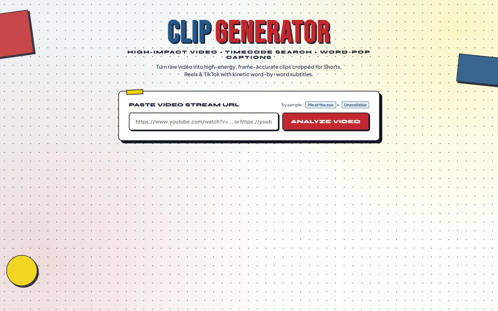

Phase 01 · Stream Ingestion
Stream Ingestion & URL Analyzer
Neo-Brutalist URL intake and validation terminal. Extracts stream metadata, thumbnail graphics, duration, and channel information before kicking off non-blocking background ingestion.